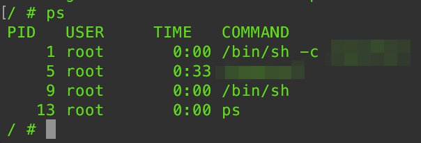
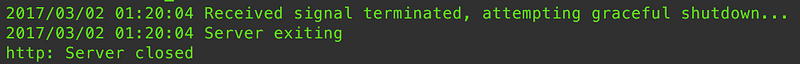

Today’s mistake: go1.8’s Graceful Shutdown finds my silly error
So I was writing a system running on Kubernetes for $work. Then I realized I had just upgraded my development go version to 1.8, which introduces built-in graceful shutdown for HTTP servers.
I wrote a signal handler, and made it so that when I received a SIGTERM, SIGINT, etc , I call server.Shutdown() . I uploaded the new image, changed my deployment.yaml, and then kubectl apply.
Then I fired up stern, and did a kubectl delet pods . At this point I should have seen my log messages like "Server exiting…” but no luck. The pod itself is terminated properly.
The weird part was that I didn’t even see my failure message, like "Graceful shutdown aborted" . This completely threw me off.
So then the next natural step is to check the container and see if I can send some signals by hand. I fire kubectl exec -it <pod-id> /bin/sh . I know my process lives at PID 1, but what the heck, I get a list of processes, and I see:

Ah, there it is. PID 1 is a shell, which doesn’t automatically forward signals. Then I realize: “Wait, that means … my Dockerfile”
And sure enough, I was using CMD foo style call instead of CMD ["foo"] . This is clearly documented in the reference, and I knew this before. I just hastily created these Dockerfiles, and completely forgot about that aspect.
Dockerfiles use a simple DSL which allows you to automate the steps you would normally manually take to create an image…docs.docker.com
So I re-built my Dockerfile, made sure I had ImagePullPolicy: always in my deploymennt.yaml, and (this time, for real) “Voila!”

Moral of the story: Probably in 99% of the time in your containers you should be using CMD ["..."], not CMD ...
Happy hacking.